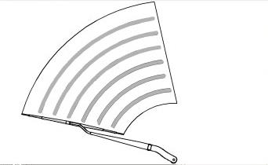
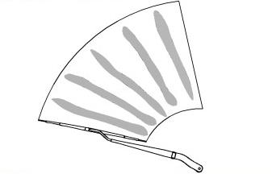
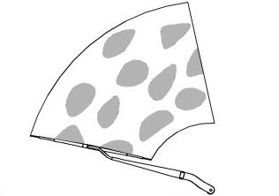
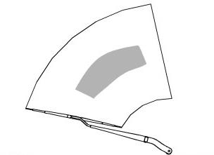

|
Частые неисправности |
Иллюстрация неисправности |
Возможные причины |
|
Тонкие дугообразные полосы, ухудшающие обзор. |
 |
Посторонние предметы на резиновой ленте щетки или повреждение кромки ленты. |
|
Посторонний шум и дребезг щетки стеклоочистителя, лента не может плавно переворачиваться, появляются вертикальные полосы. |
 |
Наличие масел или воска на стекле, деформация резиновой ленты либо несоответствие рычага стеклоочистителя требованиям. |
|
После прохода щетки остаются пятна воды. |
 |
Деформация или старение резиновой ленты. |
|
Резиновая лента не прилегает к поверхности стекла, очистка происходит неравномерно, образуются пятна или полосы. |
 |
Деформация резиновой ленты или каркаса щетки, приводящая к недостаточному прижимному усилию. |